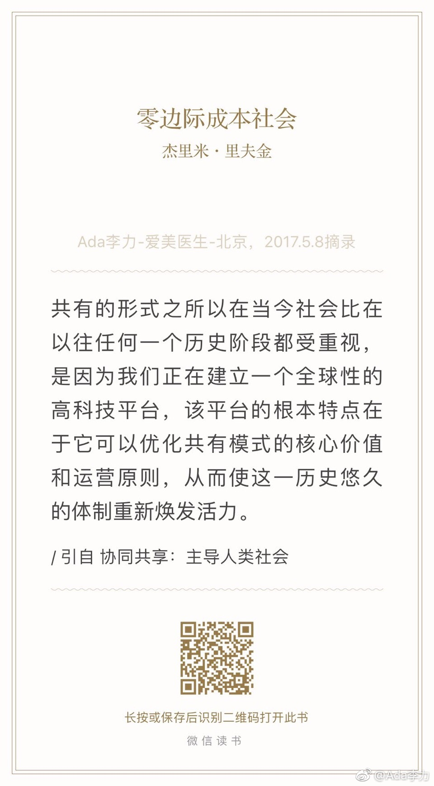

随着物联网的发展，对隐私的看法会是什么样？--- 我倾向赞同现在年青人的做法，在网络上做透明人。隐私只对头部人物有价值，作为普通人，售卖隐私可能都没有观众，注意力太稀缺了。对普通人来说，隐私没意义。@Ada李力:#读书#以为自己创业后忙于赚钱，再也不会参与开源社区的事情。但还是会被相似的理念吸引，时不时会看两眼。《零边际成本社会》 
“大部分人正在互联网上相互联络，并几乎免费地分享信息、娱乐、新闻和知识。他们已经进入了零边际成本社会。” --- 目前正热的内容创业，知识收费，只能是短命的。@Ada李力:#读书#以为自己创业后忙于赚钱，再也不会参与开源社区的事情。但还是会被相似的理念吸引，时不时会看两眼。《零边际成本社会》
书里看到了中国名字@AndrewNg吴恩达 前段时间因为离开百度，成为新闻。 查看图片@Ada李力:#读书#以为自己创业后忙于赚钱，再也不会参与开源社区的事情。但还是会被相似的理念吸引，时不时会看两眼。《零边际成本社会》
慕课网让学生接受一流老师教育的成本接近零，那么收费昂贵的名校的意义又在哪里呢？我跟外甥女聊起过在大学应该有的收获，名校门槛为你支招了优秀同学和老师围绕的环境。对大多数人来说，环境的塑造力量是最强的。@Ada李力:#读书#以为自己创业后忙于赚钱，再也不会参与开源社区的事情。但还是会被相似的理念吸引，时不时会看两眼。《零边际成本社会》
“因技术革命带来的生产力提高，会创造更多的就业机会，还是减少工作机会？” --- 我倾向是会减少工作机会。那么，大量失业人员能做什么呢？猜想，虚拟游戏世界，或许是个解决方案。@Ada李力:#读书#以为自己创业后忙于赚钱，再也不会参与开源社区的事情。但还是会被相似的理念吸引，时不时会看两眼。《零边际成本社会》

 查看图片
查看图片